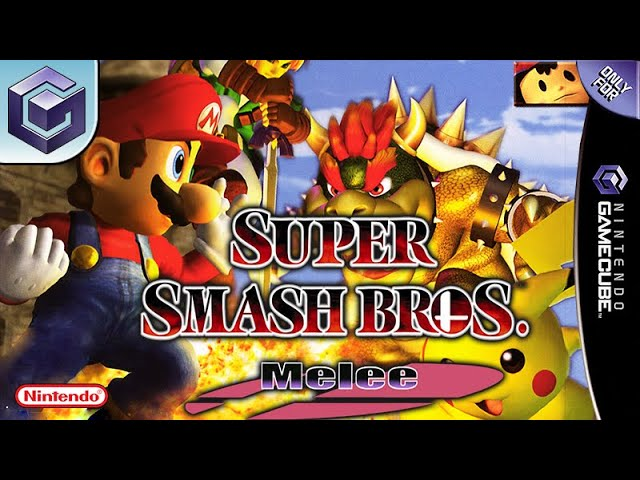
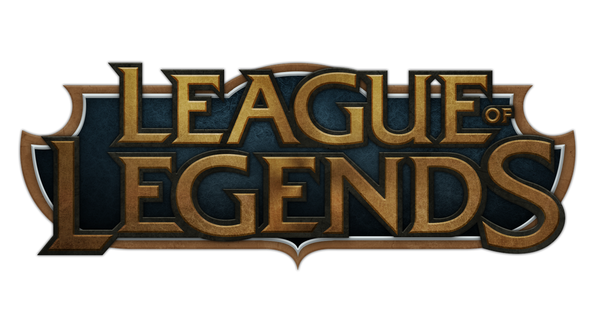

My Life of Competitive Gaming
My Introduction to Gaming

I was first introduced to gaming at the age of three when my parents purchased a Nintendo Entertainment System (NES) for my brother and I on Christmas of 1986. We were introduced to Super Mario Bros. and Duck Hunt. We spent hours playing these games, thus starting my addiction to gaming at an early age.
My family had an Atari 5200, which was played frequently by my older brother and dad. I wasn't interested in these games until my dad and I played them as a bonding experience as I was growing up. As most kids, as I got older I played as many games as I could get my hands on. I played all the new systems as they came out: Super Nintendo, Playstation One, Nintendo 64, Nintendo Game Cube, Playstation 2, Xbox, and Xbox 360.
First Competitive Gaming Experience: Smash Brothers
In college, I was introduced to Smash Brothers: Melee ("SBM" from here on out). We would spend hours... possibly 8-10 hours a day playing this game. I was the RA of my floor, so I basically did what I wanted and would hold tournaments and Smash Brothers parties all hours of the day and night. We weren't old enough to drink and living on a dry campus, we made the loser chug a 12oz. can of Mountain Dew: Live Wire. After hours of play, someone would end up throwing up and that was our "competition," not to be the first person to puke.
During a trip to a Mini-Con in Oklahoma, they were holding a SBM tournament. I promptly entered and was the favorite for winning, but I pulled a stupid move in the semi finals against Gannondorf and that ended my run.
I played some other tournaments over the next year. I finally reached regional glory by going back to Mini-Con the next year and dominated the tournament. I never went on to the national scene, but I was hooked on competitive gaming from there on out.
Magic: The Gathering
I had a short stint while in college of playing Magic: The Gathering competitively in the Pro Tour Qualifiers. My highest achievement of MTG was missing entering the pro tour of MTG by one game in an extended block tournament. The term "mana-flooded" comes to mind everytime I think of that game 3.
I enjoyed this time with MTG, but I found having to spend hundreds of dollars every few months for new cards to keep current with their expansions exhausting. I sold my collection after about a two year love of the game.
World of Warcraft

My next foray into the gaming involved Massively Multiplayer Online Role-Playing Game (MMORPG or MMO). I had played Diablo I & Diablo II for years and had played it online, but had never really gotten into the Player versus Player (PVP) or Ladder Ranking system. These games were considered Online Action RPGs, but not MMOs. My first real MMO was Dungeon & Dragons Online, but it faded off in about a year as end game content was lacking.
My friend, Steve, recommended we started playing World of Warcraft (WoW), thus started my 6 year addiction...
I started playing casually in Vanilla WoW, not really getting involved in raiding. As the game's first expansion, "The Burning Crusade," came out in 2007, this is what truly thrust me into raiding. Horde side Paladin class was now available and I was hooked. I played 40+ hours a week leveling my character up and grinding dungeons to get gear, so I could raid with guild.
Learning the ropes of raiding, the next expansion, "Wrath of the Lich King," launched, I fully submerged myself into raiding full time. I left my current guild and went to Elementium, where they achieved the US #58 kill on the Heroic Lich King 25 man raid. When the expansion, "Cataclysm," launched, the guild fell apart. I left Elementium and joined Static.
Static was my home for the next 3 years. We achieved World #46 kill on Heroic Sinestra, World #86 on Heroic Ragnaros and finishing in tier 13 with a top 100 kill of 10 man Heroic Deathwing. My raiding days ended after these achievements as I met my wife shortly after and there was no more time for 40+ hours of WoW.
Diablo III
In between the WoW expansions of Cataclysm and Mists of Pandaria, Blizzard released Diablo III. As previous addict of Diablo I & II, I picked this game up on launch and played it for hours on end between raiding in WoW.
I achieved a top 100 world Insane kill on Diablo. I farmed items to sell on the RMAH before Blizzard shut that nightmare of a game-ender down. Shortly after my achievement, I returned to WoW to spend all my gaming hours on raiding.
Hearthstone
I picked up Hearthstone to play after I first got married. It was an online card game based on WoW. I roughly played it for a year. I reached "Legendary" rank in season 2, which is basically "Master/Challenger" of most other rankings in online games.
Once again, the company, Blizzard, thought releasing expansion after expansion to make money was a good idea and I quit shortly after not wanting to spend more money in a game.
Heroes of the Storm

My introduction to Multiplayer Online Battle Arenas (MOBA) started with Blizzard's version. Being able to play all my favorite characters from their previous games in a 5v5 match was amazing. I played this game for about 3 years reaching Platinum 1 in the ranking system.
Unfortunately, Blizzard ruined this game by pulling all their funding from development and professional e-sport play.
League of Legends
Currently, I play League of Legends (LoL), but I haven't gotten extremely involved in competitive play. I have dabbled in it, but as I get older my reflexes get slower and my free time gets shorter, competitive gaming is slowly becoming a thing of my past.
In the End...
As with all good things, they must come to end. I have greatly enjoyed my 20 years of competitive gaming. I look back on it all fondly and brag to my kids when I kick their butts in their new games.
Some things you just never lose.